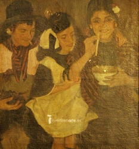
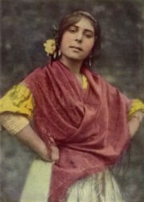

EL GITANO
Rota la vara y el pie
y entre leyes sometido
caminaba una mañana,
aquél que de lejos vino.
¿Donde está tu fuerza, díme
dónde tu vara gitana.
Dónde tu azul libertad,
dónde díme, dónde está?
Caminas sobre la arena
entre montañas y olvidos
el peso de tus grilletes
ha terminado contigo.
|

JOSÉ CRUZ HERRERA
(Cádiz, 1890 - 1972)
Gitanos- 1913
Óleo sobre lienzo -85,5 x 78 cm
|
Nace en Jerez de la Frontera,
Cádiz, su madre Gabriela Soto, heredera del gran Manuel Torre,
(sobrina); su padre, Juan Cortés Vargas,
herrero de Jerez,
y maestro herrador en la Caballería Española.
Manuel a los 14 años ingresa como soldado
ayudante en la herrería para trabajar en la fragua y el herradero
de los caballos del Ejército.
A los 17 años pasa voluntario al Grupo de
Tiradores de Infi, nº 1, en Marruecos español, llegando
a comandante de Infantería.
Se casó en las Palmas de Gran Canaria siendo padre de cinco hijos.
Enviudó en el año 1984.
Una vez retirado del Ejército
se dedica a escribir lo que puede y
en especial de los gitanos: Su raza.
|
|
A mí lo que más me gusta
después de hacer el trabajo
es andar por los jardines
con la cabeza hacia abajo.
Y buscar escarabajos, negros,
como la noche es “ greñí" negra
y ensanrtalos uno a uno,
igual que ristra de ajos.
“Sonajero” alegre
terror del escarabajo.
Los bichitos los hizo Dios
para alegrar el descampado.
Todos somos necesarios,
aunque sean escarabajos.
No me gusta discutir
y menos, el llevarle la contraria.
Pero esos negros bichos
peores son que cucarachas.
Manuel, enciende la fragua
que el sol ha salido ya.
La luna se está ocultando,
y los gallos, han dejado de cantar.
Ya cacarean las gallinas.
Palomas,vienen y van.
Ya se escucha la corneta
“A Diana” tocando está.
toque para levantar a la tropa
(De "Allá por tierras del moro")
|

Del blog del autor
|
|